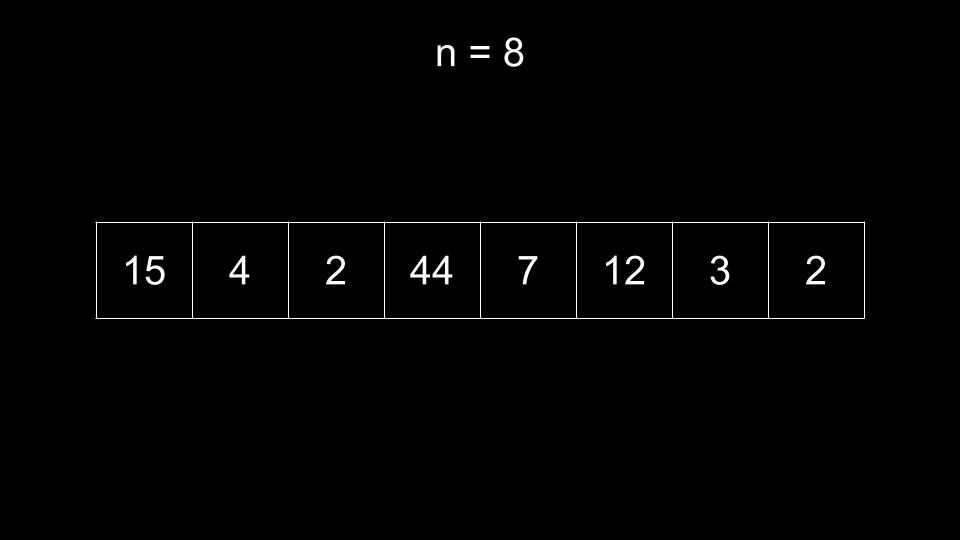
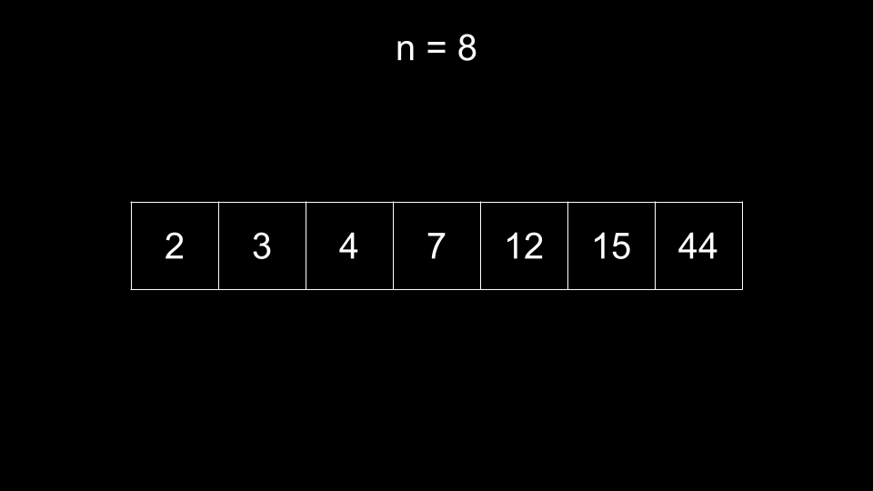
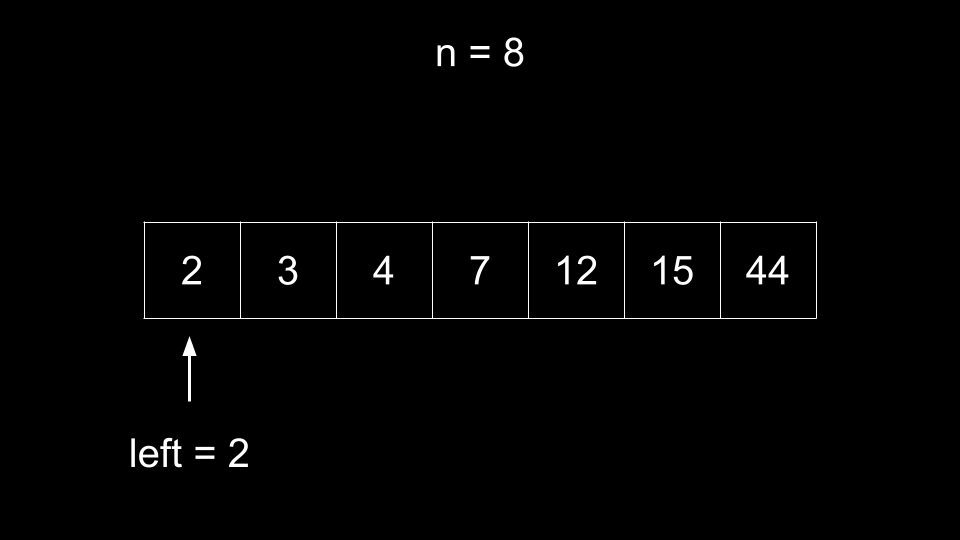
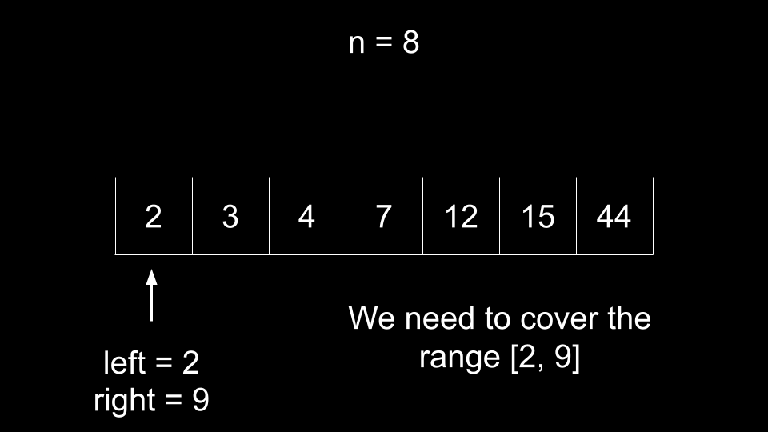
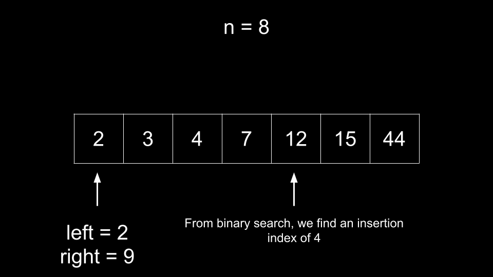
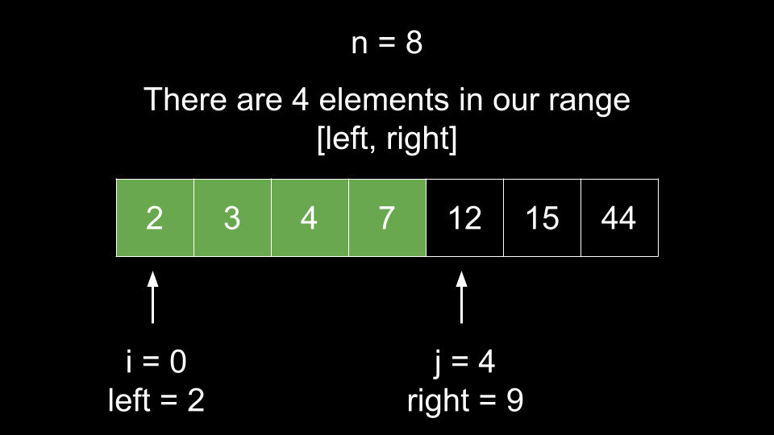
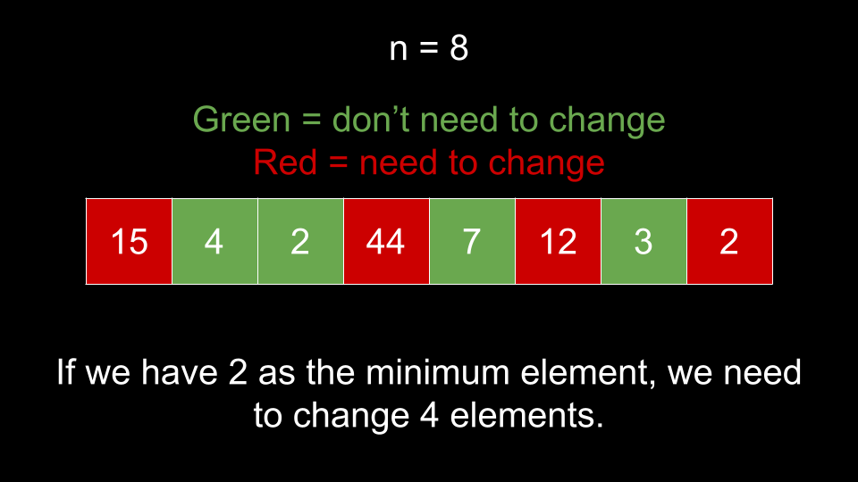
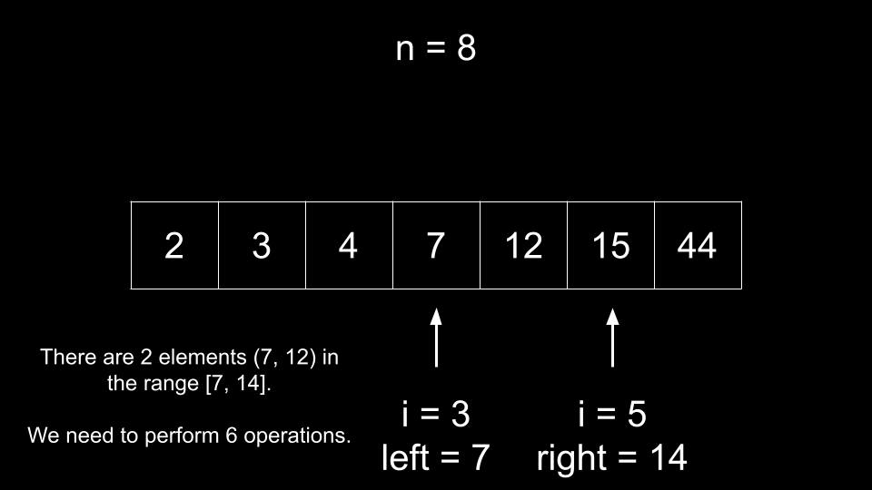

Intuition
The problem description gives some rules for what a continuous array is, but we can simplify it to help us better
understand the problem. A continuous array covers all the elements in a range of size n. Essentially,
if we sort a continuous array, it will continuously count up by 1.
We can define a continuous array by giving its bounds - left and right. For example, in the
following continuous array:
[6, 3, 5, 4]
The bounds are left = 3 and right = 6. As you can see, the array fully covers all elements
in the range [3, 6]. If we were to sort it, we would get [3, 4, 5, 6], which starts at
left and counts up by 1 until we reach right.
To solve this problem, we will iterate over the array and treat each element as left. We can then
calculate right = left + n - 1. We now want to convert the array into a continuous array that covers
all elements in the range [left, right]. How many operations do we need to accomplish this?
We need to find how many elements in the array are already in the range [left, right]. We can leave
these elements unchanged and fill in the rest of the range using operations. Note that if there are duplicate
elements in the input, this strategy will not work properly. For example, let's say we had the following input:
6, 3, 3, 5, 4
If we had left = 3, we would have right = 7. Every element in the input is in the range
[3, 7], so it appears that we don't need any operations. However, the number 7 is missing
because we have 3 twice. Thus, we should first convert nums into a set to get rid of
duplicate numbers.
Now that we have gotten rid of the duplicates, how can we quickly find how many elements in the array are in a given
range [left, right]? If the array is sorted, then we can binary search to efficiently find how many
elements are less than or equal to right. We already know how many elements are less than
left because we treat left = nums[i] during iteration.
Let's summarize the algorithm with an example.

First, we remove duplicates from the array, then sort it. Note the original length before removing duplicates as
n = 8.

Now, we iterate over the array. For each index i, we treat left = nums[i].

If we were to create a continuous array with left = 2 as the minimum, we would need a maximum of right
= left + n - 1 = 9.

How many operations do we need? We start by finding how many elements in the array are already in the desired range
[left, right]. Binary search to find the insertion index of right. Note that the binary
search here is finding the index after the greatest element less than or equal to
right.

Let's call this index j. We have j as the index of the first element that falls outside our
range due to it being too large. We also have i as the index of the first element in our range. Thus,
we can calculate the number of elements already in our range as j - i.

As you can see, we have 4 elements already in the range [left, right]. Thus, these elements
do not need to be changed. As we must construct an array of length 8, we require 8 - 4 = 4
operations (one for each other element) to create a continuous array if we treat 2 as the minimum.

We can repeat this process for every index in the sorted, duplicate-free array. For example, if we treat nums[3]
= 7 as the minimum, then our range is [7, 14]. We can binary search to find j and
then calculate j - i = 2 as the number of elements already in our range. Thus, we need to perform
8 - 2 = 6 operations if we treat 7 as the minimum.

As we iterate over all indices and perform the above process, we keep track of the minimum operations needed.
Algorithm
n = nums.length and the answer ans = n.nums and then sort it. We will call this new array newNums.
i over the indices of newNums:
left = newNums[i].right = left + n - 1.j, the insertion index of right in newNums using binary
search.
count = j - i, the number of elements already in our range.ans with n - count if it is smaller.ans.Implementation
Java
class Solution {
public int minOperations(int[] nums) {
int n = nums.length;
int ans = n;
HashSet unique = new HashSet<>();
for (int num : nums) {
unique.add(num);
}
int[] newNums = new int[unique.size()];
int index = 0;
for (int num : unique) {
newNums[index++] = num;
}
Arrays.sort(newNums);
for (int i = 0; i < newNums.length; i++) {
int left = newNums[i];
int right = left + n - 1;
int j = binarySearch(newNums, right);
int count = j - i;
ans = Math.min(ans, n - count);
}
return ans;
}
public int binarySearch(int[] newNums, int target) {
int left = 0;
int right = newNums.length;
while (left < right) {
int mid = (left + right) / 2;
if (target < newNums[mid]) {
right = mid;
} else {
left = mid + 1;
}
}
return left;
}
}
C++
class Solution {
public:
int minOperations(vector& nums) {
int n = nums.size();
int ans = n;
// std::set automatically sorts
set unique(nums.begin(), nums.end());
vector newNums;
for (int num : unique) {
newNums.push_back(num);
}
for (int i = 0; i < newNums.size(); i++) {
int left = newNums[i];
int right = left + n - 1;
int j = upper_bound(newNums.begin(), newNums.end(), right) - newNums.begin();
int count = j - i;
ans = min(ans, n - count);
}
return ans;
}
};
Python3
class Solution:
def minOperations(self, nums: List[int]) -> int:
n = len(nums)
ans = n
new_nums = sorted(set(nums))
for i in range(len(new_nums)):
left = new_nums[i]
right = left + n - 1
j = bisect_right(new_nums, right)
count = j - i
ans = min(ans, n - count)
return ans
Complexity Analysis
Given nn
as the length of nums,
Time complexity: O(n⋅logn)O(n \cdot \log{}n)
To remove duplicates and sort nums, we require O(n⋅logn)O(n \cdot \log{}n) time.
Then, we iterate over nn indices and perform a O(logn)O(\log{}n) binary search at each index.
Space complexity: O(n)O(n)
We create a new array newNums of size O(n)O(n).
Note that even if you were to modify the input directly, we still use O(n)O(n) space
creating a hash set to remove duplicates. Also, it is considered a bad practice to modify the input, and
many people will argue that modifying the input makes it part of the space complexity anyway.
Intuition
In the previous approach, we locked in an element newNums[i] as left, calculated right,
then found the insertion index of right as j. We used an O(logn)O(\log{}n)
binary search to find j, but we can do better using a sliding window.
Because newNums is sorted:
i increases, so does left = newNums[i].left means an increase in the upper bound right as
well.
right increases, j either remains the same or increases.Thus, as i increases, j will stay the same or increase.
We initialize j = 0 and follow the same process as in the last approach. Iterate i over the
indices of newNums and treat each left = newNums[i] as the minimum element. This gives us
right = newNums[i] + n - 1 as our maximum element.
How do we update j? Similar to the last approach, we have j as the index of the first
element out of our range. Thus, we increment j until it points to an element out of our range. The
condition for this is:
while (newNums[j] < newNums[i] + n)
Once this condition is broken, newNums[j] is out of our range [left, right] and correctly
positioned. We can calculate the number of elements already in our range as j - i just like in the
previous approach.
Because j starts at 0 and cannot exceed the length of newNums, it will only be
incremented at most nn times across the entire algorithm. This means
it costs O(1)O(1) amortized to calculate j,
an improvement from the O(logn)O(\log{}n)
binary search.
Algorithm
n = nums.length and the answer ans = n.nums and then sort it. We will call this new array newNums.
j = 0 and iterate i over the indices of newNums:
newNums[j] is within our range (less than newNums[i] + n), increment
j.
count = j - i, the number of elements already in our range.ans with n - count if it is smaller.ans.Implementation
Java
class Solution {
public int minOperations(int[] nums) {
int n = nums.length;
int ans = n;
HashSet unique = new HashSet<>();
for (int num : nums) {
unique.add(num);
}
int[] newNums = new int[unique.size()];
int index = 0;
for (int num : unique) {
newNums[index++] = num;
}
Arrays.sort(newNums);
int j = 0;
for (int i = 0; i < newNums.length; i++) {
while (j < newNums.length && newNums[j] < newNums[i] + n) {
j++;
}
int count = j - i;
ans = Math.min(ans, n - count);
}
return ans;
}
}
C++
class Solution {
public:
int minOperations(vector& nums) {
int n = nums.size();
int ans = n;
// std::set automatically sorts
set unique(nums.begin(), nums.end());
vector newNums;
for (int num : unique) {
newNums.push_back(num);
}
int j = 0;
for (int i = 0; i < newNums.size(); i++) {
while (j < newNums.size() && newNums[j] < newNums[i] + n) {
j++;
}
int count = j - i;
ans = min(ans, n - count);
}
return ans;
}
};
Python3
class Solution:
def minOperations(self, nums: List[int]) -> int:
n = len(nums)
ans = n
new_nums = sorted(set(nums))
j = 0
for i in range(len(new_nums)):
while j < len(new_nums) and new_nums[j] < new_nums[i] + n:
j += 1
count = j - i
ans = min(ans, n - count)
return ans
Complexity Analysis
Given nn
as the length of nums,
Time complexity: O(n⋅logn)O(n \cdot \log{}n)
To remove duplicates and sort nums, we require O(n⋅logn)O(n \cdot \log{}n) time.
Then, we iterate over nn indices and perform O(1)O(1) amortized work at each
iteration. The while loop inside the for loop can only iterate at most nn times total across all iterations of
the for loop. Each element in newNums can only be iterated over once by this while loop.
Despite this approach having the same time complexity as the previous approach (due to the sort), it is a slight practical improvement as the sliding window portion is O(n)O(n).
Space complexity: O(n)O(n)
We create a new array newNums of size O(n)O(n).
Note that even if you were to modify the input directly, we still use O(n)O(n) space
creating a hash set to remove duplicates. Also, it is considered a bad practice to modify the input, and
many people will argue that modifying the input makes it part of the space complexity anyway.